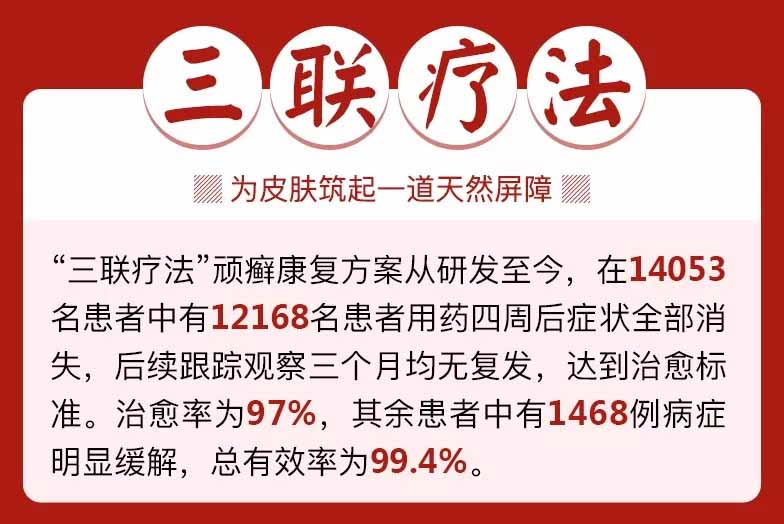
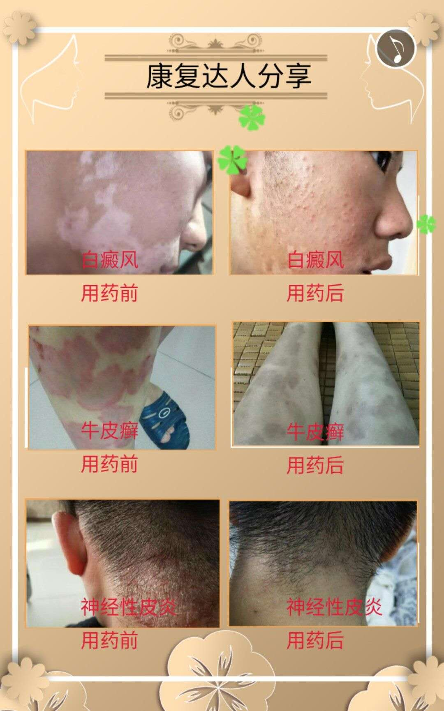
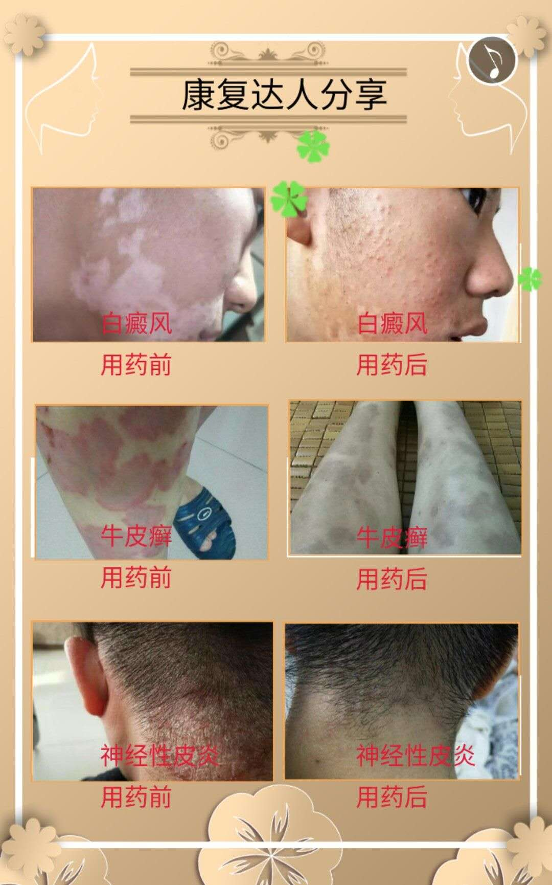
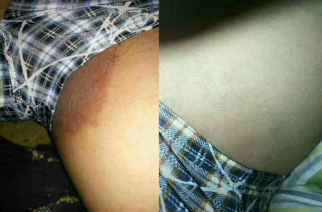

|
迷人的背影
9小时前
推荐
980/回复
拿老师，我用药半个月了，患处有所好转，但好像在其他部位又长出一两粒，这是怎么回事？ |
|

|
勇敢的心
1天前
推荐
780/回复
都说这么好，我不这么看，皮肤病那么难治，你这么好效果，那不早出名了？劳资去百度查哈 |
|

|
默默
1天前
推荐
750/回复
杨老师，我用药一个星期了，为什么上身恢复快，腰部和下身恢复慢呢？ |
|

|
弱水三千
2天前
推荐
590/回复
老杨老师，我现在哺乳期可以用你们的药吗？ |
|

|
蝴蝶自来
2天前
推荐
909/回复
真的非常感谢杨老，我牛皮癣七八年了，最严重的时候全身都是，一直在控制病情，可是手上腿上背上一直有，各大医院一直治，一直断不了根，在杨老这里拿了两个周期，平时应酬也比较多，不是很注意，结果前期有些反反复复，感觉效果不是很明显，后期杨老指导我严重注意忌口，配合治疗，真的康复的。太感谢杨老了。 |
|

|
架海紫金梁
3天前
推荐
775/回复
2009年的时候两三天全身开始冒出红点，一直没怎么管，后来在人民医院，检查结果是我得了 "牛皮癣"那时候的我还没有什么感觉出。直到后来，当病情变得更加恶劣，从腿上慢慢扩展到全身，那段时间门都不敢出。各大医院看了好多次，在网上也咨询过不少，中药西药都吃遍了，一直时好时坏。期间有好几次就差点要放弃。偶然看到了杨老师的宣传，就加上了杨老师的微信，之后与家人商量好来治，当时就拿了一个周期的药物，在杨老的指导下，有了一些效果便坚持下来了。第二个周期效果就非常明显了，现在完全康复了，在这里真的非常感谢杨老师 |
|

|
梅子
3天前
推荐
455/回复
有这么好的效果吗？我脸上的痘痘号治不？多少钱？ |
|

|
夏天的味道
3天前
推荐
895/回复
我是一名白癜风患者，患病8年了，主要在手臂脖子上，我外婆有，我妈妈没有，到我这里就有了。去过很多医院治疗过，做过308激光，喝过中药，效果都不显著，一次偶然的机会看到了杨老师的宣传，我就加了杨老师的微信，通过微信拍照告诉杨老师我的病情，杨老师给我制定了治疗方案，用药第一个周期，上班经常熬夜，饮食上也控制得不是很好，用药效果不好，在杨老师耐心的指导下，和我自己的控制下，用药第二个周期有明显的效果，白斑颜色逐渐变淡，后期坚持用了四个周期的药物，现在已经完全康复。以前夏天不敢穿短袖，很自卑，真的很感谢杨老师，希望杨老师能帮助更多患者康复。 |
|

|
高雅女王
3天前
推荐
495/回复
杨老师，孩子八岁了，腰上，胳膊上都有一小块白癜风，大人现在想看看她的白癜风她都不让，杨老师你说这怎么治疗啊？不想给孩子怎么小就留下心理阴影。 |
|

|
幸福的蜻蜓
4天前
推荐
668/回复
得了这种皮肤病每天很是烦心，工作和生活受到了极大的影响，一直在寻医问药，看到了杨老的广告，很想试一试，但是前期实在是.....，我也是想看看大家的用药情况，现在我决定了去试一试，希望能看到效果。 |
|

|
永不言败
4天前
推荐
556/回复
杨老，您说我这个用了十天药 那个得牛皮癣的位置就开始往下面脱那个皮皮，这是好还是坏啊？搞的挺恶心的 |
|

|
小四虎
4天前
推荐
667/回复
老师，刚刚用了一个周期的药，白斑颜色稍微有点点发红，这个属于正常情况吗？ |
|

|
繁华过后的落幕
4天前
推荐
667/回复
我是一名白癜风患者，患病8年了，主要在手臂脖子上，我外婆有，我妈妈没有，到我这里就有了。去过很多医院治疗过，做过308激光，喝过中药，效果都不显著，一次偶然的机会看到了杨老师的宣传，我就加了杨老师的微信，通过微信拍照告诉杨老师我的病情，杨老师给我制定了治疗方案，用药第一个周期，上班经常熬夜，饮食上也控制得不是很好，用药效果不好，在杨老师耐心的指导下，和我自己的控制下，用药第二个周期有明显的效果，白斑颜色逐渐变淡，后期坚持用了四个周期的药物，现在已经完全康复。以前夏天不敢穿短袖，很自卑，真的很感谢杨老师，希望杨老师能帮助更多患者康复。 |
|

|
锦华
4天前
推荐
452/回复
正在找鱼胶，真不知道哪家信得过，加个微看看先吧 |
|

|
AK
5天前
推荐
154/回复
我是一位被牛皮藓困扰多年的患者，之前去医院看过很多次，用过外用的卡泊三醇软膏（金迪银） 、乐夫松，口服阿维A胶囊，刚开始用的时候有一点效果，但是效果不明显。后来又找了一位老医生帮忙治疗，当时是喝的中药，喝了一年了，也是不见好。就这样，反反复复的治疗了7年。在我准备要放弃的时候偶然间在网上看到了杨绍臣杨老的宣传，我当时是非常不相信的，因为在各种大医院都看过了，一直没治好。也没想过治疗，但是我家里人说我还年轻，而且也不是什么大病，反正钱也花了不少，也不在乎这几千块钱了。在家里人的极力鼓励和劝说下，我加了杨老的微信，当时我没想过能治好，就抱着死马当活马医的心态来治，当时我就拿了一个周期的药，用了20天结果发现我的牛皮藓真的有明显的效果，当时特别开心，就跟杨老说了，杨老说建议我再拿两个周期药，我觉得病有改变了比什么都好，我就又拿了两个周期的药，在杨老的治疗下，我的牛皮藓终于好了，现在已经好了大半年了，也没复发，我自己也变得自信了。真的很感谢杨老，治好了我多年的牛皮藓。谢谢杨老！ |
|
|
小封
5天前
推荐
457/回复
身上头上大腿上个月就都好了他小腿上的癣片以前面积就很大很厚，现在都缩小成1厘米大小的片了，他恢复了得地方我也在一直给他用药 为了巩固治疗。 |
||
达人分享：告诉你如何更好康复顽固牛皮癣，白癜风，湿疹等皮肤病*
达人分享：告诉你如何更好康复顽固牛皮癣，白癜风，湿疹等皮肤病*
皮肤专科
精华 专业2018-7-22 17:32
首创三联疗法 告别顽固皮肤病
郑重承诺：
此方案经临床验证，总有效率99.4%
不管你是几十年的牛皮癣；
还是十几年的体癣、股癣；
或是简单的湿疹、神经性皮炎、白癜风，过敏性皮炎等等。
现在只要使用这个"三联疗法"顽癣康复方案，即通过内服排毒护肝清癣毒、净血液，再外喷抑菌液修复皮损，抑制病菌，同时配合苗侗瑶百年外护乳膏，重建免疫系统，为皮肤筑起一道天然屏障！就能轻松告别各类皮肤顽癣。

复制下面微信号码立即添加老师微信
皮肤问题一对一指导
杨绍臣愈肤方致癣友的一封信
亲爱的朋友们：
你是否花钱无数，病情不但没有好转，反而更加严重？你是否在亲人面前饱受冷落，在朋友面前遭受异样眼光？你是否每天把自己裹得像个粽子，在孩子眼里就是个怪物？
自从患了牛皮癣，你是否发现西药中药用了不计其数，土方偏方数不胜数，最终不但没治好，反而导致病情大面积爆发，全身鳞屑不停的脱落结痂，痛不欲生，跑了很多三甲医院，大小诊所，民间名医。在一次次治疗，一次次扩散后，身心受到了很大的伤害，过度的服用各类药物导致肝肾功能下降，身体免疫力非常差。
甚至很多牛皮癣、体癣、手癣患者治了几年、十几年甚至几十年的病，花了几千、几万甚至十几万的钱，最后不仅身体垮了，钱也花光了，还背了一身的债......
 


部分患者的康复图及给老赠送的锦旗！
杨医师的皮肤病秘方对：银屑病（牛皮癣）、白癜风，鱼鳞病（蛇皮癣）、皮炎湿疹、荨麻疹、神经性皮炎、各类杂癣、皮肤瘙痒都有特效。如果你对杨医师的秘方和用法还有什么疑问，都可以加杨医师的微信号 ，一起交流皮肤病康复经验。，或点击下面二维码加杨老微信！
为何皮肤病久治不愈年年治年年发？
从人类诞生的第一天开始，就在与皮肤顽癣作斗争，几千年来，却始终没有一个突破性发展。庆幸的是，早在10年前，杨老爷子意外的发现，皮肤病久治不愈、反复发作、甚至遗传，在于人体存在"碱性异常粘液质"。
据侗医研究表明：皮肤病实质是一种基因病。所有的皮肤病，不管是严重的牛皮癣（银屑病），还是体癣、股癣、手癣、神经性皮炎、湿疹等，基因病变的根源都是因为人体内产生了一种"碱性异常粘液质"（碱毒复合体），这种"碱性异常粘液质"就是血液、组织细胞液之间存在毒素，导致脏毒淤积，到一定程度后症表于皮肤，就形成疹、癣等皮肤顽疾。
因此，治疗皮肤顽癣，必须从导致"皮肤基因病变的根源"入手，深层清除血液、脏腑中的毒素，同时通过调理脾胃，恢复机体的正常代谢功能，清除"碱性异常粘液质"，才能彻底根除皮肤顽癣。
可以说，我们发现了解救皮肤顽癣的基因密码，预示着人类将在不久的将来，彻底攻破皮肤顽癣，让我们饱受顽癣折磨、困扰的患者迎来新的希望！走上健康的新生活！
复制下面微信号码立即添加老师微信
皮肤问题一对一指导

大家都知道，皮肤病是病在表皮，但根在血液，不管什么皮肤病，仅仅依靠外用是不可能彻底治愈的，只能改变一时的症状，"三联疗法"的核心在于开创了国内治疗顽癣的专业方案-清癣毒， 净血液，重建免疫系统！治顽癣首推侗医"三联疗法"--
杨绍臣治癣方的配方来自贵州南部一个偏僻的小山村，这种地方的生存环境，在医学上是极易产生皮肤病的地方，而千百年来皮肤病患者却非常少。这究竟是为什么？这一神奇现象引起了的好奇和重视。

为了破解这个谜，杨老带领徒弟们进行了深入研究，发现这个地方有两种神奇的植物，当地的牛羊非常喜欢吃。通过进一步研究，发现这两种植物里有一种变异基因修复酶，并发现维族人通过吃这些牛羊肉，自身就含有了这种变异基因修复酶，而这种基因修复酶能抑制人体碱性异常粘液质分泌。

记载发现，这两种神奇的植物在中药大词典中至今没有记载，只有维族名称叫菝葜、欧菝葜根。为了更好的利用好这两种药材，陕西科学院专家进一步研究，并结合中医理论，加入了黄连、白芝麻两味药材，经过近10年数以万计的临床试验下，成功开发出专治牛皮癣、体癣、神经性皮炎等皮肤顽癣的特效新药---侗医治癣方！这一科技成果，标志着我国在皮肤病医药领域取得重大进展。

"三联疗法"治疗顽癣能从根源剪断核心病菌基因复制链，实现前所未有的"汗血同治，双向排毒"的特效，强力控制"碱性异常粘液质"的复制和扩散。彻底治愈皮肤顽疾，恢复皮肤光泽度。
目前，杨老爷子团队进一步结合我国苗侗瑶中医、苗侗瑶少数民族治疗顽癣的方法，配以抑制皮肤表面病菌、修复基因的外用喷剂和重建免疫系统的外用膏剂。临床治愈标准的结果证明：此疗法对牛皮癣、白癜风，体癣、股癣、神经性皮炎、湿疹、皮肤瘙痒等有神奇的治疗效果。
复制下面微信号码立即添加老师微信
皮肤问题一对一指导
1:外用除癣征，内服清血毒
"外用除癣征"：治疗顽癣的两个外用方法（修复皮损、抑制病菌的抑菌液和配重建免疫系统的苗侗瑶百年外护乳膏），两者搭配，一喷一抹，一举击溃真皮层残留的真菌，修复受损细胞，真菌不再存活，皮损愈合，癣征消失。
"内服清血毒"：所有的皮肤病，无论是严重的牛皮癣（银屑病），还是体癣、股癣、手癣、神经性皮炎、湿疹等，基因病变的根源都是因为人体内产生了一种"碱性异常粘液质"（碱毒复合体），口服国药疗癣卡西甫散能迅速溶解堵塞汗腺的有毒物质和患病组织，疏通汗腺排毒渠道，清除体内血毒，强力控制"碱性异常粘液质"的复制和扩散，从而彻底清除各类顽癣。
2:三大功效，人类将告别顽癣
A:清毒止痒。使用顽癣康复方案"三联疗法"1-2个疗程，快速杀灭患处碱性异常粘液质及各种毒素，有效解除瘙痒、脱屑症状；同时，活性极强的"生物分子剪刀"迅速直达病灶，聚结成网状分子团，全方位重重包围碱毒复合体，强力控制碱性异常粘液质的复制和扩散，迅速改善病情。
B:灭毒治本。使用顽癣康复方案"三联疗法"2-4个疗程，全身治疗，清除各种毒素，改善体液内环境，皮损、脱屑、瘙痒、炎症等症状消失。同时，"生物剪刀"强力穿透碱毒复合体外壳，迅速抵达其核心，剪断其基因复制链，肢解碱毒复合体，并将其快速溶解，通过新陈代谢排出体外，全面祛除病根！
C:阻断复发。使用顽癣康复方案"三联疗法"4-5个疗程，清扫全身残余毒素及碱性异常粘液质，同时，恢复体液平衡态和自身免疫力，激活皮肤组织细胞自我修复和代谢功能，长出新鲜肌肤，彻底解决皮肤顽疾，强力阻断复发隐患！
3:适用人群
牛皮癣、白癜风，头癣、体癣、股癣、手足癣、花斑癣、湿疹、神经性皮炎、过敏性皮炎、顽固性瘙痒、皮肤瘙痒症、皲裂性湿疹等。
康复案例，都说这个方法效果好
何先生：11年牛皮癣痊愈了

我今年37岁，开出租车，武汉洪山人，患牛皮癣11年，一到秋冬两季就换皮，鳞屑一层一层的掉，用了很多方法，一直不能根除，家人朋友都嫌弃。使用顽癣康复方案"三联疗法"40几天，鳞屑全部脱落，皮肤不再干痒，随访未见复发。
许先生：多年体股癣全没了
我今年41岁，家住成都锦江区，机关干部，患【体股癣】多年，剧痒，抠得流脓，抹生姜，涂软膏，都没用，有臭味，使用顽癣康复方案"三联疗法"一个疗程，皮损部分愈合，两个疗程皮肤光滑如新，现在家庭幸福，工作更有信心了。
刘女士：五年脸部白癜风康复了

我是湖南益阳的刘昕，面对当初的经历，我真是欲哭无泪，"我脸上的白斑，一开始只是一块很小的斑点，这几年下来，已经长成一大块了，其实3年来我一直在寻找康复的方法，只是一直都没有什么实质性的进展，有几年去比较大的医院看，是取得了一些效果的，但是后来又复发了。"今年我贵州的妹妹寄了杨老医师的"三联疗法"祛白斑专方，不到3个疗程，肤色恢复的跟之前差不多了！再也不会一块一块白色的了，今年准备结婚！让我更加开心自信了！感谢杨老！以后会多多为你宣传。
王先生：十年股癣终于康复了
我今年36岁，湖北武汉，姓王，患股癣10年有余，前期也是不重视病情，滥用西药激素多，病情一直得不到根治，平时做小吃生意也比较忙，就没顾得上治疗，偶尔在朋友圈看到杨医师的宣传才找过来的，真没想到他的吸收效果这么好，20天的治疗改变了局部治疗，也不痒了！这次专程寄了点武汉的特产周黑鸭给杨医师尝尝！感谢他的帮助，解决了我的皮肤烦恼，我的生意也越来越红火了！
杨医师的皮肤病秘方对：银屑病（牛皮癣）、白癜风，鱼鳞病（蛇皮癣）、皮炎湿疹、荨麻疹、神经性皮炎、各类杂癣、皮肤瘙痒都有特效。如果你对杨医师的秘方和用法还有什么疑问，都可以加杨医师的微信号复制下方微信号添加 ，或扫描二维码，一起交流皮肤病康复经验！
精选评论